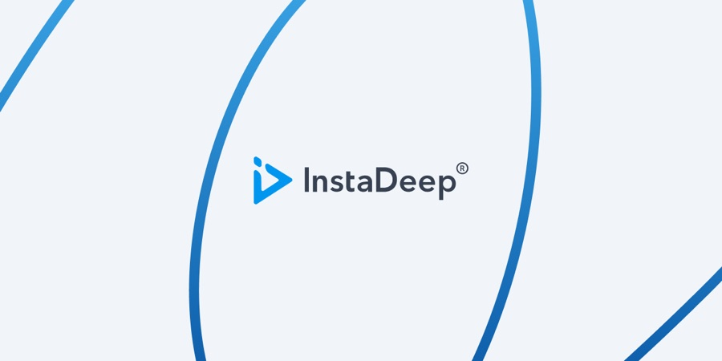

Case study
InstaDeep
Three product surfaces and the design system they all run on.
Senior product designer at InstaDeep, an AI research company acquired by BioNTech. I work across DeepPCB, their cloud-native PCB routing software, InstaNovo, their protein-sequencing model, and the design system every InstaDeep product surface and demo is built from.

DeepPCB
DeepPCB is InstaDeep's cloud-native PCB routing software — a reinforcement-learning router that takes a board layout and returns a routed one. My work covers the product's public surfaces: what the tool claims, who it claims it for, and how someone evaluating it gets from the pitch to a signed-up account.
These are the marketing and onboarding surfaces rather than the routing canvas itself.
InstaNovo
InstaNovo and InstaNovo+ are de novo peptide sequencing models: they read a mass spectrum and return a peptide sequence without matching it against a reference database, which is the whole point — a database search can only find what is already in the database. Built with the Department of Biotechnology and Biomedicine at the Technical University of Denmark, and published in Nature Machine Intelligence.
My work was the public face of it: the logo, and a landing page that has to hold two readers at once. A proteomics researcher wants the benchmark before they want anything else — 52% average peptide accuracy across eight biological datasets, 34% more novel peptides, 42% more peptide spectrum matches. Someone deciding whether to fund or adopt it wants to know what that unlocks. So the numbers sit in a band immediately under the hero rather than being saved for a technical page, and the two models get one section each — InstaNovo transcribing, InstaNovo+ refining by diffusion — because the relationship between them is the thing people get wrong.
The set also includes the states, in the same visual language rather than a default: the 404 is built from real sequence output, and the pre-launch holding page had to look like the product it was holding.
Design system
Every InstaDeep product surface and research demo is built from one system. It exists because the alternative was each team inventing its own buttons, and it had to survive being used by engineers with no designer in the room.
Browse the components below.
States and recovery
The states are the part of a product nobody screenshots and everybody hits. Both products can fail in ways a marketing page never shows — a routing job that will not converge, a spectrum with no confident call, a link that has gone stale — so the error pages carry each product's own grid or sequence motif, say what happened in that product's vocabulary, and offer exactly one way back. Two products, one discipline.